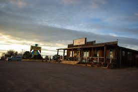
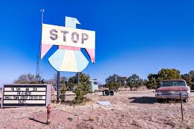

Pie Town New Mexico is located east of the Arizona border and directly between Quemado and Datil. The population there is 178 people. Most of this town consists of a main highway and yes there are not only one but three pie shops. There three churches and thats about all there is in the town. Most of the people who live around this area live a bit out of town.
 